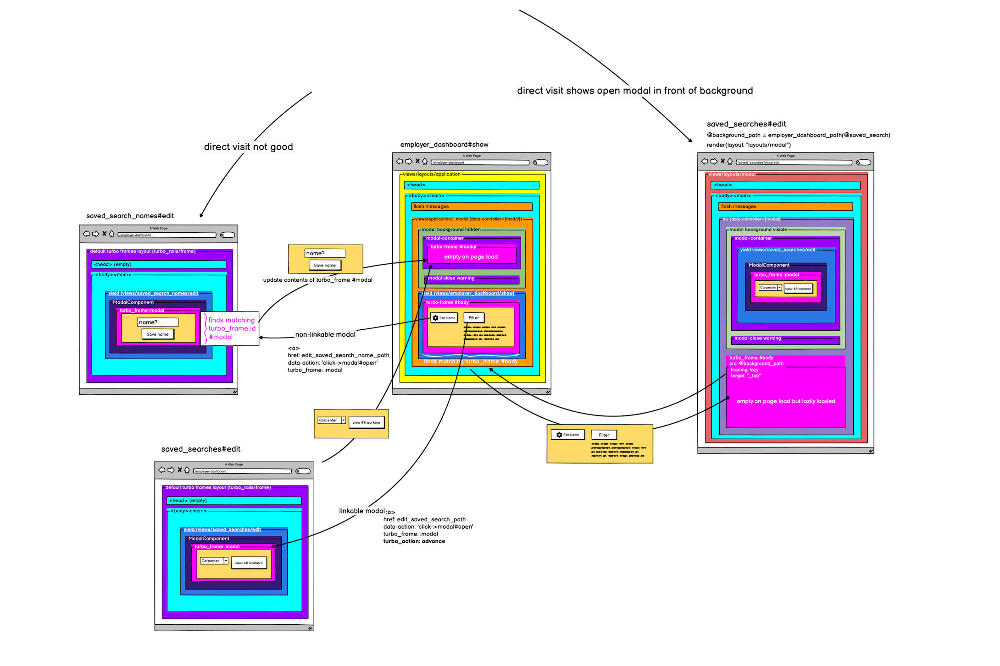
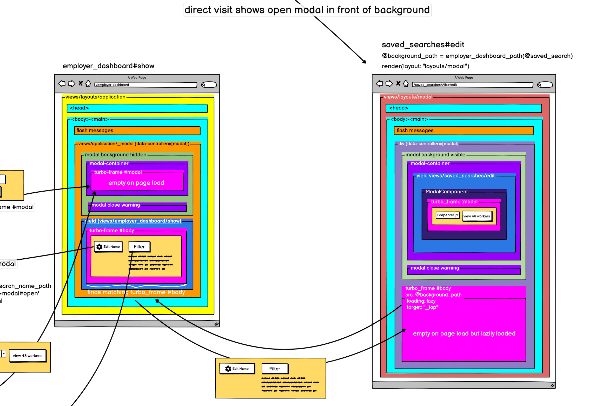
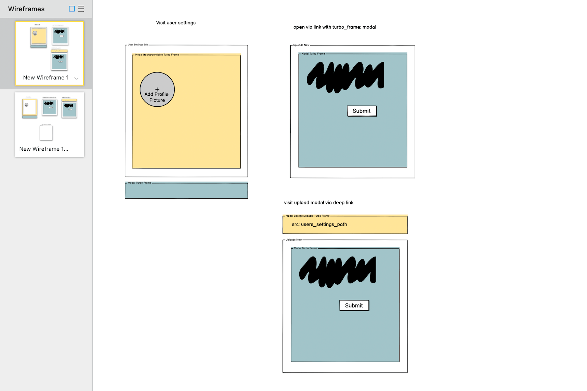
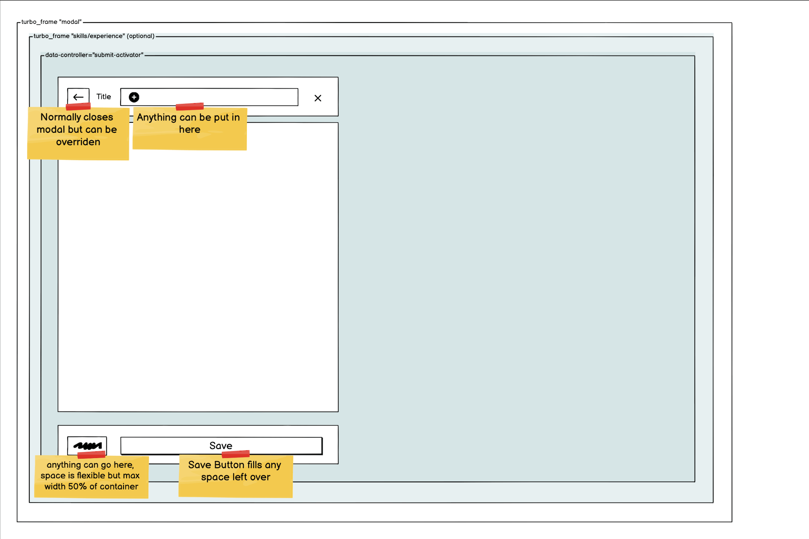

Designed and implemented modals that integrate the Turbo frontend library with Ruby on Rails SSR views.
Improved dev productivity by enabling us to compose multi-step modals from server-rendered views with the UX of client-rendered views.
Supported "deep-linked" modals, which allowed us to create links to a page with a specific modal already open.




